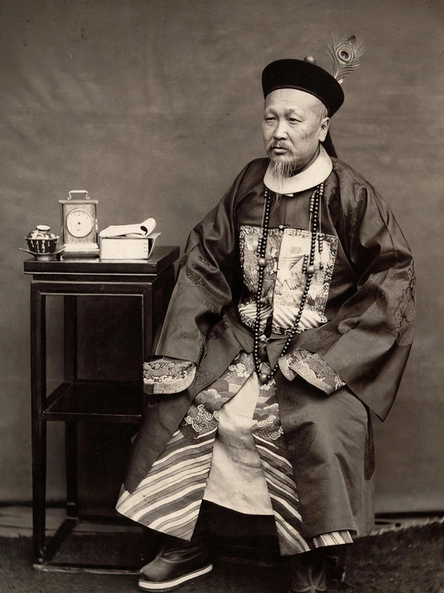

Zeng Guofan (26 November 1811 – 12 March 1872), born Zeng Zicheng, was a Chinese statesman, general and Confucian scholar of the late Qing dynasty. He raised and commanded the Xiang Army, the regional force that ultimately crushed the Taiping Rebellion, and became the most powerful Han Chinese official of his era. As a leading figure of the Self-Strengthening Movement, he promoted Western technology, arsenals and shipyards, and is often regarded as the archetype of the scholar-general.
| Zeng Guofan | |
|---|---|
 Zeng Guofan | |
| Born | 26 November 1811, Xiangxiang, Hunan |
| Died | 12 March 1872 (aged 60), Nanjing |
| Commands | Xiang Army |
| Honours | Marquis Yiyong of the First Class; posthumous name Wenzheng |
Zeng earned the jinshi degree in 1838 and rose at the Hanlin Academy in Beijing. Ordered home to Hunan for mourning in 1852, he was instead directed to raise a militia against the advancing Taiping. Zeng built the Xiang Army on personal and regional loyalties: officers recruited their own men, pay was generous, and Confucian ideology bound the force together. After early defeats — he twice attempted suicide after reverses — the Xiang Army and its riverine navy gradually retook the Yangtze valley, capturing Anqing in 1861 and finally Nanjing in July 1864, with Zeng's brother Zeng Guoquan commanding the siege.
As governor-general of Liangjiang and later Zhili, Zeng backed modernisation: he founded the Jiangnan Arsenal in Shanghai with Rong Hong (Yung Wing), sent students to the United States in the Chinese Educational Mission of 1872, and supported translation of Western technical works. His handling of the Tianjin Massacre of 1870, in which he negotiated a settlement unpopular at home, damaged his reputation. His collected letters and diaries, prescribing daily self-examination, became classics of Confucian self-cultivation and were admired by later leaders from Chiang Kai-shek to Mao Zedong.
Taiping Rebellion · Hong Xiuquan · Self-Strengthening Movement · Li Hongzhang